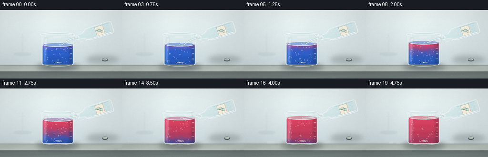
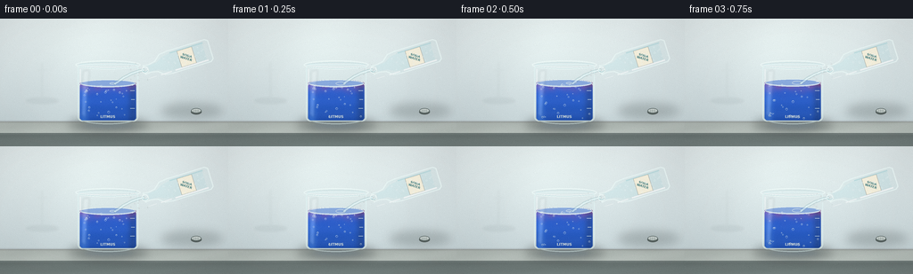
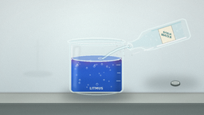
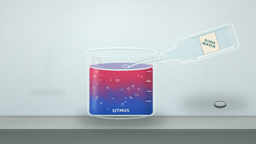
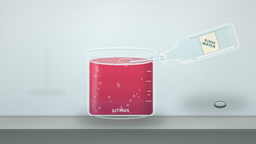
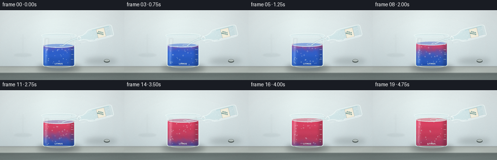
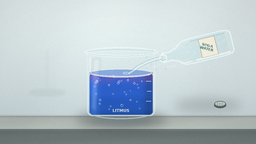
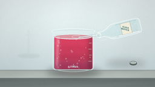

CODING AGENTS AS PIXEL WORLD MODELS
traex/DeepSeek-V4.1-Flash · phygen_148
点击播放 · 原生 RGB 像素
逐轮保存的候选
回放视频、检查图与代码变化。
每份候选均可单独播放。实际图片检查记录在下方工具轨迹中。
候选 01播放与检查图
点击播放 · 原生 RGB 像素

展开代码变化
--- 上一保存版本
+++ 本次保存版本
@@ -0,0 +1,419 @@
+"""Procedural timelapse: soda water turning blue litmus solution red."""
+
+from pathlib import Path
+import math
+
+import numpy as np
+from PIL import Image, ImageDraw, ImageFilter, ImageFont
+
+import artifact_io
+
+
+CASE_DIR = Path(__file__).resolve().parent
+WIDTH, HEIGHT, FRAME_COUNT = 256, 144, 20
+SS = 4
+W, H = WIDTH * SS, HEIGHT * SS
+
+
+def s(value):
+ return int(round(value * SS))
+
+
+def rgba(color):
+ if len(color) == 3:
+ return (*color, 255)
+ return color
+
+
+def smoothstep(a, b, value):
+ t = np.clip((value - a) / (b - a), 0.0, 1.0)
+ return t * t * (3.0 - 2.0 * t)
+
+
+def font(size, bold=False):
+ name = "DejaVuSans-Bold.ttf" if bold else "DejaVuSans.ttf"
+ path = Path("/usr/share/fonts/truetype/dejavu") / name
+ try:
+ return ImageFont.truetype(str(path), max(1, int(size * SS)))
+ except OSError:
+ return ImageFont.load_default()
+
+
+def make_background():
+ yy, xx = np.mgrid[0:H, 0:W].astype(np.float32)
+ xn, yn = xx / (W - 1), yy / (H - 1)
+
+ top = np.array([228, 237, 238], dtype=np.float32)
+ low = np.array([204, 218, 221], dtype=np.float32)
+ wall_t = np.clip(yn / 0.82, 0.0, 1.0)[..., None]
+ wall = top * (1.0 - wall_t) + low * wall_t
+
+ glow = np.exp(-(((xn - 0.43) / 0.34) ** 2 + ((yn - 0.20) / 0.32) ** 2))
+ wall += glow[..., None] * np.array([10, 11, 9], dtype=np.float32)
+ wall += (np.sin(xn * 18.0 + yn * 4.0) * 1.3)[..., None]
+
+ counter_y = 116.0 / HEIGHT
+ edge_y = 129.0 / HEIGHT
+ counter = np.array([184, 193, 188], dtype=np.float32)
+ counter_front = np.array([116, 128, 126], dtype=np.float32)
+ image = wall.copy()
+
+ counter_mask = yn >= counter_y
+ counter_shade = 0.96 + 0.06 * np.clip((yn - counter_y) / (edge_y - counter_y), 0, 1)
+ counter_rgb = counter[None, None, :] * counter_shade[..., None]
+ grain = (np.sin(xx * 0.011 + yy * 0.073) * 2.3 +
+ np.sin(xx * 0.031 - yy * 0.009) * 1.1)
+ counter_rgb += grain[..., None]
+ image[counter_mask] = counter_rgb[counter_mask]
+
+ front_mask = yn >= edge_y
+ front_shade = 0.90 + 0.13 * np.clip((yn - edge_y) / (1.0 - edge_y), 0, 1)
+ front_rgb = counter_front[None, None, :] * front_shade[..., None]
+ front_rgb += (np.sin(xx * 0.007 + yy * 0.14) * 1.2)[..., None]
+ image[front_mask] = front_rgb[front_mask]
+
+ seam = np.exp(-((yy - counter_y * H) / (1.2 * SS)) ** 2)
+ image -= seam[..., None] * np.array([22, 25, 24], dtype=np.float32)
+ image += np.exp(-((yy - (edge_y * H + 1.0 * SS)) / (0.9 * SS)) ** 2)[..., None] * 11
+
+ vignette = 1.0 - 0.105 * (((xn - 0.5) * 1.2) ** 2 + ((yn - 0.48) * 1.15) ** 2)
+ image *= np.clip(vignette, 0.88, 1.0)[..., None]
+
+ rng = np.random.default_rng(81)
+ image += rng.normal(0.0, 0.72, (H, W, 1))
+ return Image.fromarray(np.clip(image, 0, 255).astype(np.uint8), "RGB").convert("RGBA")
+
+
+BACKGROUND = make_background()
+
+
+def draw_soft_shadows(layer):
+ draw = ImageDraw.Draw(layer, "RGBA")
+ draw.ellipse((s(77), s(112), s(166), s(127)), fill=(32, 46, 48, 92))
+ draw.ellipse((s(181), s(96), s(250), s(112)), fill=(38, 47, 45, 55))
+ return layer.filter(ImageFilter.GaussianBlur(5.0 * SS))
+
+
+def axis_polygon(base, lip, stations):
+ base = np.array(base, dtype=np.float64)
+ lip = np.array(lip, dtype=np.float64)
+ axis = lip - base
+ unit = axis / np.linalg.norm(axis)
+ normal = np.array([-unit[1], unit[0]])
+ top, bottom = [], []
+ for t, half_width in stations:
+ center = base + axis * t
+ top.append(center - normal * half_width)
+ bottom.append(center + normal * half_width)
+ return [tuple(p * SS) for p in top + bottom[::-1]]
+
+
+def paste_rotated_text(canvas, text, center, angle, text_font, fill, spacing=0):
+ box = int(26 * SS)
+ tile = Image.new("RGBA", (box, box), (0, 0, 0, 0))
+ d = ImageDraw.Draw(tile)
+ d.multiline_text(
+ (box // 2, box // 2), text, font=text_font, fill=fill,
+ anchor="mm", align="center", spacing=spacing,
+ )
+ tile = tile.rotate(angle, resample=Image.Resampling.BICUBIC, expand=False)
+ canvas.alpha_composite(tile, (int(center[0] * SS - box / 2), int(center[1] * SS - box / 2)))
+
+
+def draw_bottle(canvas, p, frame_index):
+ base = (236.0, 35.0)
+ lip = (162.0, 58.0)
+ stations = [
+ (0.00, 10.5), (0.04, 13.0), (0.61, 13.0),
+ (0.73, 12.0), (0.82, 6.0), (0.92, 4.5),
+ (0.98, 4.8), (1.00, 5.3),
+ ]
+ outline = axis_polygon(base, lip, stations)
+
+ bottle = Image.new("RGBA", (W, H), (0, 0, 0, 0))
+ d = ImageDraw.Draw(bottle, "RGBA")
+ d.polygon(outline, fill=(205, 234, 235, 42))
+ d.line(outline + [outline[0]], fill=(235, 249, 247, 168), width=s(1.35), joint="curve")
+
+ liquid_outline = axis_polygon(base, lip, [
+ (0.09, 9.8), (0.17, 10.4), (0.58, 9.8),
+ (0.71, 8.0), (0.80, 4.2), (0.90, 3.5), (0.93, 4.0),
+ ])
+ d.polygon(liquid_outline, fill=(150, 219, 225, 38))
+
+ # Long, broken highlights make the clear bottle read as glass.
+ b = np.array(base)
+ l = np.array(lip)
+ axis = l - b
+ unit = axis / np.linalg.norm(axis)
+ normal = np.array([-unit[1], unit[0]])
+ for t0, t1, width, alpha in [
+ (0.07, 0.57, 1.8, 150), (0.63, 0.79, 1.2, 135), (0.86, 0.98, 0.8, 120)
+ ]:
+ p0 = b + axis * t0 - normal * 10.6
+ p1 = b + axis * t1 - normal * 10.6
+ d.line((tuple(p0 * SS), tuple(p1 * SS)), fill=(255, 255, 255, alpha), width=s(width))
+ d.line((tuple((b + axis * 0.08 + normal * 9.8) * SS),
+ tuple((b + axis * 0.58 + normal * 9.8) * SS)),
+ fill=(112, 190, 199, 75), width=s(1.4))
+
+ # Label follows the bottle axis.
+ label_outline = axis_polygon(base, lip, [(0.25, 9.6), (0.47, 9.6)])
+ d.polygon(label_outline, fill=(246, 239, 218, 231))
+ d.line(label_outline + [label_outline[0]], fill=(128, 126, 113, 135), width=s(0.55))
+ center = b + axis * 0.36
+ label_angle = math.degrees(math.atan2(-axis[1], -axis[0]))
+ paste_rotated_text(
+ bottle, "SODA\nWATER", center, label_angle,
+ font(3.6, bold=True), (50, 112, 118, 245), spacing=s(0.2),
+ )
+
+ # Soda bubbles, gently drifting upward through the tilted bottle.
+ rng = np.random.default_rng(74)
+ for _ in range(24):
+ t = rng.uniform(0.09, 0.70)
+ n_offset = rng.uniform(-7.5, 7.5)
+ center = b + axis * t + normal * n_offset
+ center[1] -= p * rng.uniform(0.5, 2.0)
+ radius = rng.uniform(0.34, 0.95)
+ d.ellipse((s(center[0] - radius), s(center[1] - radius),
+ s(center[0] + radius), s(center[1] + radius)),
+ outline=(245, 255, 255, int(rng.uniform(100, 180))), width=s(0.35))
+
+ # Neck lip and open mouth.
+ d.ellipse((s(158.7), s(54.0), s(166.2), s(61.6)), fill=(218, 239, 239, 38),
+ outline=(242, 252, 250, 190), width=s(0.9))
+ d.arc((s(159.2), s(55.3), s(165.7), s(60.2)), 8, 171, fill=(103, 181, 189, 120), width=s(0.55))
+
+ canvas.alpha_composite(bottle)
+
+
+def draw_cap(layer):
+ d = ImageDraw.Draw(layer, "RGBA")
+ d.ellipse((s(214), s(102), s(226), s(108)), fill=(83, 93, 91, 145))
+ d.ellipse((s(214.3), s(101.1), s(225.7), s(106.5)), fill=(182, 192, 189, 235),
+ outline=(93, 106, 104, 210), width=s(0.65))
+ d.arc((s(215.2), s(101.8), s(224.8), s(105.7)), 195, 345, fill=(238, 244, 241, 220), width=s(0.45))
+ for x in (217.2, 219.6, 222.0):
+ d.line((s(x), s(102.2), s(x), s(105.6)), fill=(116, 128, 124, 110), width=s(0.3))
+
+
+def liquid_color_field(surface_y, p):
+ yy, xx = np.mgrid[0:H, 0:W].astype(np.float32)
+ yn = yy / SS
+ xn = xx / SS
+ rel_y = np.clip((yn - surface_y) / max(1.0, 114.0 - surface_y), 0.0, 1.0)
+
+ q = float(smoothstep(0.08, 0.96, p))
+ front = -0.03 + q * 1.12
+ wave = (0.035 * np.sin(yn * 0.34 + 1.5 * np.sin(xn * 0.17 + p * 8.0))
+ + 0.018 * np.sin(xn * 0.52 - yn * 0.22 + p * 10.0))
+ red = 1.0 / (1.0 + np.exp(-(front + wave - rel_y) / 0.115))
+
+ # A final gentle homogenization makes the endpoint uniformly red.
+ red = np.maximum(red, smoothstep(0.76, 1.0, p) * 0.90)
+ blue_rgb = np.array([22, 82, 205], dtype=np.float32)
+ red_rgb = np.array([207, 43, 77], dtype=np.float32)
+ rgb = blue_rgb[None, None, :] * (1.0 - red[..., None]) + red_rgb[None, None, :] * red[..., None]
+
+ # Glass modulates the solution with a bright left edge and dark lower rim.
+ left_glow = np.exp(-((xn - 94.0) / 4.5) ** 2)
+ right_shade = 1.0 - 0.20 * np.exp(-((xn - 149.0) / 5.5) ** 2)
+ vertical = 1.08 - 0.24 * rel_y
+ rgb *= (vertical * right_shade)[..., None]
+ rgb += left_glow[..., None] * np.array([20, 28, 29], dtype=np.float32)
+ rgb += (np.sin(yn * 0.42 + p * 3.0) * 2.0)[..., None]
+ return np.clip(rgb, 0, 255).astype(np.uint8), red
+
+
+def draw_beaker(canvas, p, frame_index):
+ surface_y = 73.0 - 12.2 * float(smoothstep(0.02, 0.96, p))
+ left, right, bottom = 87.0, 155.0, 116.0
+
+ body_mask = Image.new("L", (W, H), 0)
+ md = ImageDraw.Draw(body_mask)
+ md.rounded_rectangle((s(left), s(51), s(right), s(bottom)), radius=s(5.5), fill=255)
+
+ glass = Image.new("RGBA", (W, H), (0, 0, 0, 0))
+ gd = ImageDraw.Draw(glass, "RGBA")
+ gd.rounded_rectangle((s(left), s(51), s(right), s(bottom)), radius=s(5.5),
+ fill=(220, 240, 242, 22), outline=(225, 245, 245, 150), width=s(1.25))
+ gd.line((s(90), s(57), s(90), s(108)), fill=(255, 255, 255, 105), width=s(1.3))
+ gd.line((s(151.5), s(57), s(151.5), s(108)), fill=(214, 236, 238, 75), width=s(1.0))
+ gd.arc((s(89), s(106), s(153), s(119)), 6, 174, fill=(220, 241, 240, 120), width=s(1.2))
+
+ liquid_mask = Image.new("L", (W, H), 0)
+ ld = ImageDraw.Draw(liquid_mask)
+ ld.rounded_rectangle((s(89.6), s(surface_y), s(152.4), s(114.5)),
+ radius=s(3.2), fill=255)
+ ld.ellipse((s(89.6), s(surface_y - 4.1), s(152.4), s(surface_y + 4.1)), fill=255)
+ liquid_mask = Image.composite(liquid_mask, Image.new("L", (W, H), 0), body_mask)
+ liquid_mask = liquid_mask.point(lambda value: int(value * 0.89))
+
+ rgb, red = liquid_color_field(surface_y, p)
+ liquid = Image.fromarray(rgb, "RGB").convert("RGBA")
+ liquid.putalpha(liquid_mask)
+ glass.alpha_composite(liquid)
+
+ # Liquid surface, meniscus, and a few splash rings.
+ sd = ImageDraw.Draw(glass, "RGBA")
+ surface_rgb = np.array([44, 100, 211]) * (1.0 - float(smoothstep(0.25, 0.95, p)))
+ surface_rgb += np.array([218, 58, 83]) * float(smoothstep(0.25, 0.95, p))
+ surface_fill = tuple(np.clip(surface_rgb, 0, 255).astype(int)) + (115,)
+ sd.ellipse((s(90), s(surface_y - 4.3), s(152), s(surface_y + 4.3)),
+ fill=surface_fill, outline=(238, 251, 249, 125), width=s(0.75))
+ sd.arc((s(91), s(surface_y - 3.8), s(151), s(surface_y + 3.2)),
+ 8, 172, fill=(255, 255, 255, 150), width=s(0.55))
+ ring_phase = (p * 7.0 + frame_index * 0.15) % 1.0
+ ring_r = 3.0 + 5.0 * ring_phase
+ ring_a = int(95 * (1.0 - ring_phase))
+ sd.arc((s(126 - ring_r), s(surface_y - ring_r * 0.35),
+ s(126 + ring_r), s(surface_y + ring_r * 0.35)),
+ 0, 360, fill=(245, 255, 253, ring_a), width=s(0.45))
+
+ # Bubbles rise through the solution; the acid front also nudges them sideways.
+ rng = np.random.default_rng(112)
+ for _ in range(31):
+ x0 = rng.uniform(94.0, 149.0)
+ phase = rng.uniform(0.0, 1.0)
+ speed = rng.uniform(0.75, 1.55)
+ radius = rng.uniform(0.34, 1.22)
+ travel = 114.5 - surface_y - 3.0
+ y = 112.5 - ((phase + p * speed * 1.35) % 1.0) * travel
+ x = x0 + 0.8 * math.sin(phase * 19.0 + p * 6.5)
+ alpha = int(75 + 75 * rng.uniform(0.3, 1.0))
+ sd.ellipse((s(x - radius), s(y - radius), s(x + radius), s(y + radius)),
+ outline=(236, 249, 250, alpha), width=s(0.35))
+ if radius > 0.78:
+ sd.arc((s(x - radius * 0.55), s(y - radius * 0.55),
+ s(x + radius * 0.55), s(y + radius * 0.55)),
+ 190, 330, fill=(255, 255, 255, min(230, alpha + 35)), width=s(0.28))
+
+ # Etched label and graduation marks.
+ label_font = font(4.1, bold=True)
+ sd.text((s(121), s(110.5)), "LITMUS", font=label_font, fill=(245, 251, 247, 105), anchor="mm")
+ for y, length in [(71, 4.0), (81, 5.0), (91, 4.0), (101, 5.0)]:
+ sd.line((s(151.0 - length), s(y), s(151.0), s(y)),
+ fill=(238, 250, 248, 95), width=s(0.45))
+
+ # Broad glass reflection, softened so it feels optical rather than painted.
+ reflection = Image.new("RGBA", (W, H), (0, 0, 0, 0))
+ rd = ImageDraw.Draw(reflection, "RGBA")
+ rd.polygon([(s(93), s(59)), (s(100), s(58)), (s(96), s(112)), (s(91), s(108))],
+ fill=(255, 255, 255, 35))
+ reflection = reflection.filter(ImageFilter.GaussianBlur(1.2 * SS))
+ glass.alpha_composite(reflection)
+
+ # Beaker rim: rear arc, inner wall, and front lip.
+ rim = Image.new("RGBA", (W, H), (0, 0, 0, 0))
+ rdraw = ImageDraw.Draw(rim, "RGBA")
+ rdraw.ellipse((s(84.5), s(47.0), s(157.5), s(57.0)), fill=(221, 241, 242, 22),
+ outline=(239, 251, 249, 195), width=s(1.35))
+ rdraw.arc((s(87.5), s(49.2), s(154.5), s(55.4)), 8, 172,
+ fill=(255, 255, 255, 205), width=s(0.65))
+ rdraw.arc((s(87.5), s(49.2), s(154.5), s(55.4)), 190, 350,
+ fill=(157, 199, 203, 115), width=s(0.55))
+ rdraw.arc((s(85.8), s(48.4), s(156.2), s(56.0)), 20, 160,
+ fill=(107, 171, 179, 92), width=s(0.45))
+ glass.alpha_composite(rim)
+
+ # Colored caustic reflection on the bench.
+ caustic = Image.new("RGBA", (W, H), (0, 0, 0, 0))
+ cd = ImageDraw.Draw(caustic, "RGBA")
+ c_rgb = tuple(np.clip(surface_rgb * 0.72, 0, 255).astype(int))
+ cd.ellipse((s(91), s(117), s(152), s(124)), fill=c_rgb + (42,))
+ cd.ellipse((s(101), s(119), s(141), s(123)), fill=c_rgb + (32,))
+ caustic = caustic.filter(ImageFilter.GaussianBlur(3.2 * SS))
+ canvas.alpha_composite(caustic)
+
+ canvas.alpha_composite(glass)
+ return surface_y
+
+
+def draw_stream(canvas, surface_y, p, frame_index):
+ start = np.array([162.0, 58.0])
+ end = np.array([128.5 + 1.2 * math.sin(p * 8.0), surface_y + 1.2])
+ control = np.array([145.0, 60.5])
+ points = []
+ for t in np.linspace(0.0, 1.0, 55):
+ point = (1 - t) ** 2 * start + 2 * (1 - t) * t * control + t * t * end
+ point[0] += 0.22 * math.sin(t * 24.0 + frame_index * 1.7)
+ points.append(tuple(point * SS))
+
+ stream = Image.new("RGBA", (W, H), (0, 0, 0, 0))
+ d = ImageDraw.Draw(stream, "RGBA")
+ d.line(points, fill=(169, 221, 227, 105), width=s(3.0), joint="curve")
+ d.line(points, fill=(229, 246, 247, 160), width=s(1.5), joint="curve")
+ inner = [(x + s(0.55), y) for x, y in points]
+ d.line(inner, fill=(255, 255, 255, 155), width=s(0.55), joint="curve")
+
+ rng = np.random.default_rng(350 + frame_index)
+ for _ in range(13):
+ t = rng.uniform(0.08, 0.92)
+ point = (1 - t) ** 2 * start + 2 * (1 - t) * t * control + t * t * end
+ x = point[0] + rng.uniform(-1.2, 1.2)
+ y = point[1] + rng.uniform(-0.8, 0.8)
+ r = rng.uniform(0.22, 0.62)
+ d.ellipse((s(x - r), s(y - r), s(x + r), s(y + r)),
+ fill=(245, 255, 255, int(rng.uniform(95, 180))))
+
+ stream = stream.filter(ImageFilter.GaussianBlur(0.22 * SS))
+ canvas.alpha_composite(stream)
+
+
+def draw_background_accents(canvas, p):
+ # A restrained glassware reflection on the wall keeps the lab context readable.
+ layer = Image.new("RGBA", (W, H), (0, 0, 0, 0))
+ d = ImageDraw.Draw(layer, "RGBA")
+ d.ellipse((s(29), s(89), s(66), s(96)), fill=(62, 80, 80, 15))
+ d.line((s(47), s(50), s(47), s(91)), fill=(242, 248, 245, 20), width=s(1.0))
+ d.line((s(42), s(58), s(52), s(58)), fill=(242, 248, 245, 14), width=s(0.7))
+ layer = layer.filter(ImageFilter.GaussianBlur(1.1 * SS))
+ canvas.alpha_composite(layer)
+
+
+def render_frame(index):
+ p = index / (FRAME_COUNT - 1)
+ frame = BACKGROUND.copy()
+ shadow = draw_soft_shadows(Image.new("RGBA", (W, H), (0, 0, 0, 0)))
+ frame.alpha_composite(shadow)
+ draw_background_accents(frame, p)
+ draw_cap(frame)
+
+ surface_y = draw_beaker(frame, p, index)
+ draw_stream(frame, surface_y, p, index)
+ draw_bottle(frame, p, index)
+
+ # Airborne sparkle around the pour.
+ sparkle = Image.new("RGBA", (W, H), (0, 0, 0, 0))
+ d = ImageDraw.Draw(sparkle, "RGBA")
+ rng = np.random.default_rng(800 + index)
+ for _ in range(12):
+ x = rng.uniform(145, 166)
+ y = rng.uniform(50, 70)
+ r = rng.uniform(0.2, 0.55)
+ d.ellipse((s(x - r), s(y - r), s(x + r), s(y + r)),
+ fill=(255, 255, 255, int(rng.uniform(70, 160))))
+ frame.alpha_composite(sparkle.filter(ImageFilter.GaussianBlur(0.18 * SS)))
+
+ image = frame.convert("RGB").resize((WIDTH, HEIGHT), Image.Resampling.LANCZOS)
+ array = np.asarray(image).astype(np.int16)
+
+ # Light, frame-varying sensor grain avoids a synthetic flat finish.
+ grain_rng = np.random.default_rng(1200 + index)
+ array += grain_rng.normal(0.0, 1.15, (HEIGHT, WIDTH, 1)).astype(np.int16)
+ yy, xx = np.mgrid[0:HEIGHT, 0:WIDTH].astype(np.float32)
+ vignette = 1.0 - 0.055 * (((xx - WIDTH / 2) / WIDTH) ** 2 +
+ ((yy - HEIGHT / 2) / HEIGHT) ** 2)
+ array = array * vignette[..., None]
+ return np.clip(array, 0, 255).astype(np.uint8)
+
+
+def main():
+ frames = np.stack([render_frame(i) for i in range(FRAME_COUNT)], axis=0)
+ artifact_io.save(frames, CASE_DIR)
+ print(f"Saved {frames.shape} RGB frames to {CASE_DIR}")
+
+
+if __name__ == "__main__":
+ main()
候选 02播放与检查图
点击播放 · 原生 RGB 像素


展开代码变化
--- 上一保存版本
+++ 本次保存版本
@@ -90,7 +90,7 @@
def draw_soft_shadows(layer):
draw = ImageDraw.Draw(layer, "RGBA")
draw.ellipse((s(77), s(112), s(166), s(127)), fill=(32, 46, 48, 92))
- draw.ellipse((s(181), s(96), s(250), s(112)), fill=(38, 47, 45, 55))
+ draw.ellipse((s(174), s(99), s(242), s(111)), fill=(38, 47, 45, 48))
return layer.filter(ImageFilter.GaussianBlur(5.0 * SS))
@@ -121,23 +121,23 @@
def draw_bottle(canvas, p, frame_index):
- base = (236.0, 35.0)
- lip = (162.0, 58.0)
+ base = (232.0, 41.0)
+ lip = (163.0, 58.0)
stations = [
- (0.00, 10.5), (0.04, 13.0), (0.61, 13.0),
- (0.73, 12.0), (0.82, 6.0), (0.92, 4.5),
- (0.98, 4.8), (1.00, 5.3),
+ (0.00, 9.0), (0.03, 11.5), (0.12, 12.5), (0.59, 12.5),
+ (0.70, 11.7), (0.79, 7.1), (0.89, 4.2),
+ (0.97, 4.5), (1.00, 5.0),
]
outline = axis_polygon(base, lip, stations)
bottle = Image.new("RGBA", (W, H), (0, 0, 0, 0))
d = ImageDraw.Draw(bottle, "RGBA")
- d.polygon(outline, fill=(205, 234, 235, 42))
- d.line(outline + [outline[0]], fill=(235, 249, 247, 168), width=s(1.35), joint="curve")
+ d.polygon(outline, fill=(206, 236, 237, 55))
+ d.line(outline + [outline[0]], fill=(240, 251, 249, 195), width=s(1.15), joint="curve")
liquid_outline = axis_polygon(base, lip, [
- (0.09, 9.8), (0.17, 10.4), (0.58, 9.8),
- (0.71, 8.0), (0.80, 4.2), (0.90, 3.5), (0.93, 4.0),
+ (0.08, 8.6), (0.16, 9.8), (0.56, 9.8),
+ (0.68, 8.4), (0.78, 4.8), (0.89, 3.3), (0.94, 3.8),
])
d.polygon(liquid_outline, fill=(150, 219, 225, 38))
@@ -148,17 +148,17 @@
unit = axis / np.linalg.norm(axis)
normal = np.array([-unit[1], unit[0]])
for t0, t1, width, alpha in [
- (0.07, 0.57, 1.8, 150), (0.63, 0.79, 1.2, 135), (0.86, 0.98, 0.8, 120)
+ (0.05, 0.55, 1.65, 158), (0.61, 0.77, 1.15, 140), (0.85, 0.98, 0.75, 125)
]:
- p0 = b + axis * t0 - normal * 10.6
- p1 = b + axis * t1 - normal * 10.6
+ p0 = b + axis * t0 - normal * 10.1
+ p1 = b + axis * t1 - normal * 10.1
d.line((tuple(p0 * SS), tuple(p1 * SS)), fill=(255, 255, 255, alpha), width=s(width))
- d.line((tuple((b + axis * 0.08 + normal * 9.8) * SS),
- tuple((b + axis * 0.58 + normal * 9.8) * SS)),
+ d.line((tuple((b + axis * 0.08 + normal * 9.5) * SS),
+ tuple((b + axis * 0.58 + normal * 9.5) * SS)),
fill=(112, 190, 199, 75), width=s(1.4))
# Label follows the bottle axis.
- label_outline = axis_polygon(base, lip, [(0.25, 9.6), (0.47, 9.6)])
+ label_outline = axis_polygon(base, lip, [(0.23, 9.4), (0.46, 9.4)])
d.polygon(label_outline, fill=(246, 239, 218, 231))
d.line(label_outline + [label_outline[0]], fill=(128, 126, 113, 135), width=s(0.55))
center = b + axis * 0.36
@@ -181,9 +181,9 @@
outline=(245, 255, 255, int(rng.uniform(100, 180))), width=s(0.35))
# Neck lip and open mouth.
- d.ellipse((s(158.7), s(54.0), s(166.2), s(61.6)), fill=(218, 239, 239, 38),
- outline=(242, 252, 250, 190), width=s(0.9))
- d.arc((s(159.2), s(55.3), s(165.7), s(60.2)), 8, 171, fill=(103, 181, 189, 120), width=s(0.55))
+ d.ellipse((s(159.3), s(54.2), s(166.7), s(61.7)), fill=(218, 239, 239, 45),
+ outline=(246, 253, 251, 220), width=s(0.9))
+ d.arc((s(159.8), s(55.4), s(166.2), s(60.4)), 8, 171, fill=(103, 181, 189, 135), width=s(0.55))
canvas.alpha_composite(bottle)
候选 03播放与检查图

可观测工具轨迹
实际执行的命令与返回图片。
命令 1exit 0
/bin/bash -c "pwd && rg --files -g '"'!*.mp4'"' -g '"'!*.mov'"' -g '"'!*.avi'"' | sed -n '1,160p'"
命令 2exit 0
/bin/bash -c "sed -n '1,240p' prompt.txt"
命令 3exit 0
/bin/bash -c "sed -n '1,280p' GENERATION_RULES.md"
命令 4exit 0
/bin/bash -c 'cat task_spec.json'
命令 5exit 0
/bin/bash -c "find . -maxdepth 2 -type f -printf '%p %s bytes\\n' | sort | sed -n '1,200p'"
命令 6exit 0
/bin/bash -c "sed -n '1,260p' artifact_io.py"
命令 7exit 0
/bin/bash -c 'python generate.py'
命令 8exit 0
/bin/bash -c 'python generate.py'
命令 9exit 0
/bin/bash -c "python - <<'PY'
from pathlib import Path
import json
import numpy as np
from PIL import Image
p = Path('.')
frames = np.stack([np.asarray(Image.open(f)) for f in sorted((p/'frames').glob('*.png'))])
with np.load(p/'pixels.npz') as z:
packed = z['pixels']
print('frames:', frames.shape, frames.dtype)
print('packed:', packed.shape, packed.dtype)
print('frame deltas:', [int(np.abs(frames[i].astype(int)-frames[i-1].astype(int)).mean()) for i in range(1,20)])
# Liquid ROI color: endpoint separation and nonblank range.
roi = frames[:, 75:112, 92:150].astype(float)
print('liquid mean start:', roi[0].mean((0,1)).round(1).tolist())
print('liquid mean end: ', roi[-1].mean((0,1)).round(1).tolist())
print('index.html bytes:', (p/'index.html').stat().st_size)
print('spec:', json.loads((p/'task_spec.json').read_text()))
PY"视觉工具实际返回图片 1

视觉工具实际返回图片 2

视觉工具实际返回图片 3

视觉工具实际返回图片 4

视觉工具实际返回图片 5

视觉工具实际返回图片 6

视觉工具实际返回图片 7

视觉工具实际返回图片 8

保存候选 3 份；完成命令 9 次；可验证图片返回 8 张。原始 API 响应与完整日志保留在本地。